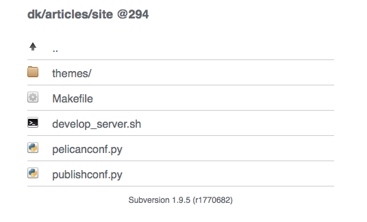

Still using Subversion? Oh my, you are old school. The cool kids use Git these days. But since this series is all about Apache, and Subversion is neatly integrated, let’s march on.
This post will first cover some basics, and then build on Fancy directory listings for pretty looks, and finally explain a MacGyver (but convenient) deployment technique.
Basic setup
Obviously, you need to enable some Apache modules:
sudo a2enmod dav_svn
sudo a2enmod authz_svn
Now, a very basic setup in a virtual host would look like this:
<Location /svn>
DAV svn
SVNParentPath /var/lib/svn
AuthzSVNAccessFile /etc/apache2/svn.authz
<IfModule mod_headers.c>
<Limit GET>
Header set Cache-Control "no-cache, no-store, must-revalidate"
Header set Pragma "no-cache"
Header set Expires 0
</Limit>
</IfModule>
</Location>
In the example above, access controls are missing, add them as needed. The <Limit GET> section prevents caching of stale files when you browse repositories.
After setting up authentication, add /etc/apache2/svn.authz and tweak it. Some people argue against path based authorization, but in my experience you’ll need it sooner or later.
[/]
* =
$authenticated = rw
Now, having the boring part out of the way, move on to make it pretty.
Pimp my SVN style
SVN listings are XML, and they look crappy. The general strategy is:
- Render XML as HTML
- Apply the Apaxy style to it
- Add the usability improvements from the last post
For a result like this read on:

First, create a directory /usr/local/share/apaxy-svn and add options/apaxy-svn.conf:
Include options/apaxy-gallery.conf
Alias /.apaxy-svn /usr/local/share/apaxy-svn
<Directory /usr/local/share/apaxy-svn/>
Require all granted
Options none
Include options/expires.conf
Include options/nolog.conf
Include options/precompressed.conf
AddType text/xml .xslt
</Directory>
Second, add this XSLT stylesheet in /usr/local/share/apaxy-svn/index.xslt. Like every XSLT, it’s ugly, but causes the browser to render XML as HTML. Precompress it if you like:
<?xml version="1.0"?>
<xsl:stylesheet xmlns:xsl="http://www.w3.org/1999/XSL/Transform" version="1.0">
<xsl:output method="html" />
<xsl:template match="*" />
<xsl:template match="svn">
<html>
<head>
<title>
<xsl:if test="string-length(index/@name) != 0">
<xsl:value-of select="index/@name" />:
</xsl:if>
<xsl:value-of select="index/@path" />
</title>
<meta name="viewport" content="width=device-width, initial-scale=1" />
<link rel="stylesheet" type="text/css" href="/.apaxy/style.css" />
<link rel="stylesheet" type="text/css" href="/.apaxy-svn/style.css" />
<link rel="stylesheet" href="/.js/colorbox/example1/colorbox.css" />
<script src="/.js/jquery/jquery-3.3.1.min.js"></script>
<script src="/.js/colorbox/jquery.colorbox-min.js"></script>
<script src="/.apaxy-svn/colorbox.js"></script>
</head>
<body>
<div class="wrapper">
<xsl:apply-templates />
<div class="footer">
<xsl:element name="a">
<xsl:attribute name="href">
<xsl:value-of select="@href" />
</xsl:attribute>
Subversion
</xsl:element>
<xsl:value-of select="@version" />
</div>
</div>
</body>
</html>
</xsl:template>
<xsl:template match="index">
<h1>
<xsl:if test="string-length(@name) != 0">
<xsl:value-of select="@name" />
<xsl:if test="string-length(@rev) != 0">
—
</xsl:if>
</xsl:if>
<xsl:value-of select="@base" />
<xsl:if test="@path != '/'">
<xsl:value-of select="@path" />
</xsl:if>
<xsl:if test="string-length(@rev) != 0">
@<xsl:value-of select="@rev" />
</xsl:if>
</h1>
<xsl:if test="updir">
<xsl:apply-templates select="updir" />
</xsl:if>
<xsl:apply-templates select="dir" />
<xsl:apply-templates select="file" />
</xsl:template>
<xsl:template match="updir">
<div class="dir">
<xsl:element name="a">
<xsl:attribute name="href">..</xsl:attribute>
<xsl:element name="img">
<xsl:attribute name="src">/.apaxy/icons/folder-parent-old.png</xsl:attribute>
</xsl:element>
..
</xsl:element>
</div>
</xsl:template>
<xsl:template match="dir">
<div class="dir">
<xsl:element name="a">
<xsl:attribute name="href">
<xsl:value-of select="@href" />
</xsl:attribute>
<xsl:element name="img">
<xsl:attribute name="src">/.apaxy/icons/folder.png</xsl:attribute>
</xsl:element>
</xsl:element>
<xsl:element name="a">
<xsl:attribute name="href">
<xsl:value-of select="@href" />
</xsl:attribute>
<xsl:text> </xsl:text>
<xsl:value-of select="@name" />/
</xsl:element>
</div>
<!-- <xsl:apply-templates/ -->
</xsl:template>
<xsl:template match="file">
<div class="file">
<xsl:element name="a">
<xsl:attribute name="href">
<xsl:value-of select="@href" />
</xsl:attribute>
<xsl:element name="img">
<xsl:choose>
<xsl:when test="contains( @name, 'Makefile') or contains( @name, 'makefile')">
<xsl:attribute name="src">/.apaxy/icons/makefile.png</xsl:attribute>
</xsl:when>
<xsl:when test="contains( @name, 'README')">
<xsl:attribute name="src">/.apaxy/icons/readme.png</xsl:attribute>
</xsl:when>
<xsl:when test="contains( @name, '.') = false">
<xsl:attribute name="src">/.apaxy/icons/unknown.png</xsl:attribute>
</xsl:when>
<xsl:when test="substring-before( @name, '.') = ''">
<xsl:attribute name="src">/.apaxy/icons/default.png</xsl:attribute>
</xsl:when>
<xsl:when test="contains( @name, '.md')">
<xsl:attribute name="src">/.apaxy/icons/markdown.png</xsl:attribute>
</xsl:when>
<xsl:when test="contains( @name, '.html')">
<xsl:attribute name="src">/.apaxy/icons/html.png</xsl:attribute>
</xsl:when>
<xsl:when test="contains( @name, '.css')">
<xsl:attribute name="src">/.apaxy/icons/css.png</xsl:attribute>
</xsl:when>
<xsl:when test="contains( @name, '.yml') or contains( @name, '.yaml') or contains( @name, '.conf') or contains( @name, '.cf') or contains( @name, '.ini') or contains( @name, '.properties') or contains( @name, '.cgi')">
<xsl:attribute name="src">/.apaxy/icons/source.png</xsl:attribute>
</xsl:when>
<xsl:when test="contains( @name, '.js')">
<xsl:attribute name="src">/.apaxy/icons/js.png</xsl:attribute>
</xsl:when>
<xsl:when test="contains( @name, '.java')">
<xsl:attribute name="src">/.apaxy/icons/java.png</xsl:attribute>
</xsl:when>
<xsl:when test="contains( @name, '.jar') or contains( @name, '.zip') or contains( @name, '.7z')">
<xsl:attribute name="src">/.apaxy/icons/zip.png</xsl:attribute>
</xsl:when>
<xsl:when test="contains( @name, '.tar')">
<xsl:attribute name="src">/.apaxy/icons/tar.png</xsl:attribute>
</xsl:when>
<xsl:when test="contains( @name, '.py')">
<xsl:attribute name="src">/.apaxy/icons/py.png</xsl:attribute>
</xsl:when>
<xsl:when test="contains( @name, '.rb')">
<xsl:attribute name="src">/.apaxy/icons/rb.png</xsl:attribute>
</xsl:when>
<xsl:when test="contains( @name, '.php')">
<xsl:attribute name="src">/.apaxy/icons/php.png</xsl:attribute>
</xsl:when>
<xsl:when test="contains( @name, '.sql')">
<xsl:attribute name="src">/.apaxy/icons/sql.png</xsl:attribute>
</xsl:when>
<xsl:when test="contains( @name, '.png')">
<xsl:attribute name="src">/.apaxy/icons/png.png</xsl:attribute>
</xsl:when>
<xsl:when test="contains( @name, '.ico')">
<xsl:attribute name="src">/.apaxy/icons/ico.png</xsl:attribute>
</xsl:when>
<xsl:when test="contains( @name, '.jpg') or contains( @name, '.jpeg')">
<xsl:attribute name="src">/.apaxy/icons/jpg.png</xsl:attribute>
</xsl:when>
<xsl:when test="contains( @name, '.gif')">
<xsl:attribute name="src">/.apaxy/icons/gif.png</xsl:attribute>
</xsl:when>
<xsl:when test="contains( @name, '.bmp')">
<xsl:attribute name="src">/.apaxy/icons/bmp.png</xsl:attribute>
</xsl:when>
<xsl:when test="contains( @name, '.svg')">
<xsl:attribute name="src">/.apaxy/icons/image.png</xsl:attribute>
</xsl:when>
<xsl:when test="contains( @name, '.pdf')">
<xsl:attribute name="src">/.apaxy/icons/pdf.png</xsl:attribute>
</xsl:when>
<xsl:when test="contains( @name, '.rtf')">
<xsl:attribute name="src">/.apaxy/icons/rtf.png</xsl:attribute>
</xsl:when>
<xsl:when test="contains( @name, '.doc')">
<xsl:attribute name="src">/.apaxy/icons/doc.png</xsl:attribute>
</xsl:when>
<xsl:when test="contains( @name, '.xls')">
<xsl:attribute name="src">/.apaxy/icons/calc.png</xsl:attribute>
</xsl:when>
<xsl:when test="contains( @name, '.txt')">
<xsl:attribute name="src">/.apaxy/icons/text.png</xsl:attribute>
</xsl:when>
<xsl:when test="contains( @name, '.xml') or contains( @name, '.xsl')">
<xsl:attribute name="src">/.apaxy/icons/xml.png</xsl:attribute>
</xsl:when>
<xsl:when test="contains( @name, '.log')">
<xsl:attribute name="src">/.apaxy/icons/log.png</xsl:attribute>
</xsl:when>
<xsl:when test="contains( @name, '.mp3') or contains( @name, '.flac')">
<xsl:attribute name="src">/.apaxy/icons/audio.png</xsl:attribute>
</xsl:when>
<xsl:when test="contains( @name, '.mp4') or contains( @name, '.mpeg')">
<xsl:attribute name="src">/.apaxy/icons/video.png</xsl:attribute>
</xsl:when>
<xsl:when test="contains( @name, '.gz') or contains( @name, '.tgz')">
<xsl:attribute name="src">/.apaxy/icons/gzip.png</xsl:attribute>
</xsl:when>
<xsl:when test="contains( @name, '.sh') or contains( @name, '.bat') or contains( @name, '.cmd')">
<xsl:attribute name="src">/.apaxy/icons/script.png</xsl:attribute>
</xsl:when>
<xsl:otherwise>
<xsl:attribute name="src">/.apaxy/icons/bin.png</xsl:attribute>
</xsl:otherwise>
</xsl:choose>
</xsl:element>
</xsl:element>
<xsl:element name="a">
<xsl:attribute name="href">
<xsl:value-of select="@href" />
</xsl:attribute>
<xsl:text> </xsl:text>
<xsl:value-of select="@name" />
</xsl:element>
</div>
<!-- xsl:apply-templates/ -->
</xsl:template>
</xsl:stylesheet>
You have probably noticed that some CSS and JS is still missing. Add this to /usr/local/share/apaxy-svn/style.css:
h1 {
margin-bottom: 1em;
font-size: large;
}
img {
margin-right: 1em;
}
.file, .dir {
border-bottom: 1px solid #CCC;
margin: 4px 0px;
}
.dir:hover, .file:hover {
background: #FFE;
}
This goes into /usr/local/share/apaxy-svn/colorbox.js:
$(document).ready( function() {
$('div.file a[href$=".png"]:last-child, \
div.file a[href$=".jpg"]:last-child, \
div.file a[href$=".svg"]:last-child, \
div.file a[href$=".gif"]:last-child, \
div.file a[href$=".ico"]:last-child')
.each( function() {
$(this).attr( 'title', $(this).text());
})
.colorbox({
rel: 'gallery',
maxWidth: '100%',
maxHeight: '100%',
});
});
Now, activate the styling in your virtual host like so:
Include options/apaxy-svn.conf
<Location /svn>
# configuration...
SVNIndexXSLT /.apaxy-svn/index.xslt
# more configuration...
</Location>
After reloading the Apache config, browse to your SVN repository. It should look very much like a directory listing with popup images. Hope you like it.
Serving low-traffic sites from SVN
For low-traffic sites, it is tempting to shorten the normal edit-commit-build-deploy cycle by serving content straight from SVN. Disclaimer: Everybody advises against this. But for static sites with little traffic it does not hurt.
Let’s say you keep your source code in /svn/www.example.org and the main page is index.html.
For starters, you need to add an access rule for anonymous users in /etc/apache2/svn.authz. Good that you already configured path-based authorization:
[www.example.org:/]
* = r
$authenticated = rw
Next, put this in sites-available/www.example.org and enable it:
<VirtualHost *:80>
ServerName www.example.org
ServerAlias example.org
ServerAdmin you@example.org
DocumentRoot /var/www
Include options/expires.conf
Include options/xss.conf
<IfModule mod_rewrite.c>
RewriteEngine On
RewriteRule ^/$ /index.html [N]
RewriteRule ^/([^.].*) /svn/www.example.org/$1 [PT]
</IfModule>
<Location /svn>
DAV svn
SVNParentPath /var/lib/svn
AuthzSVNAccessFile /etc/apache2/svn.authz
<LimitExcept GET>
Require all denied
</LimitExcept>
</Location>
</VirtualHost>
Now, as an exercise, add TLS to the config as explained in the security post.